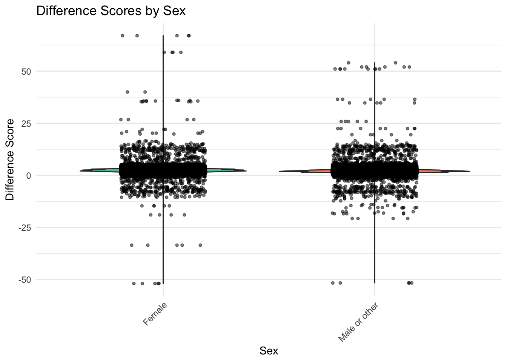

This example assesses whether growth in a subsample of ABCD participants from Baseline (T0) to the 1-Year follow-up (T1) differs significantly based on handedness, using height (“anthroheightcalc”) as a representative metric of growth. The analysis is conducted in two primary steps: 1) a difference score is calculated between baseline and Year_1 height measurements for each participant; 2) a simple regression analysis is used to test whether sex (boy, girl) predicts the average difference value in participants height from baseline to the 1-Year follow-up. Finally, a visual inspection is further conducted via a violin plot to graphically represent the relationship between difference scores and sex. The ensuing analysis and interpretations are detailed in the subsequent sections.
This code installs the r packages necessary for this example, if they are not already installed
Code
# rm(list = ls())# Create a list of required packagespackages_required <-c("tidyverse","easystats","lme4","gtsummary","report","broom","gridExtra")# Check which packages are not installed and install thempackages_to_install <-setdiff(packages_required, rownames(installed.packages()))if (length(packages_to_install) >0) {install.packages(packages_to_install)}# Load the required packageslapply(packages_required, library, character.only =TRUE)
This code loads the r libraries necessary for this example
Code
library(tidyverse) # Collection of R packages for data sciencelibrary(easystats) # Collection of R packages statistical modeling, visualization, and reportinglibrary(rstatix) # Pipe-friendly framework for performing common statslibrary(gtsummary) # Publication-ready tableslibrary(report) # Easy reporting of regression analyseslibrary(broom) # Tidy and augment statistical models outputlibrary(gridExtra) # Arrange multiple grid-based plots on a page
This code reads in and shows the data to be used in the current example
Code
# Set the data pathsdata_path_1 <-"/Users/shawes/ABCD/data/rds/abcd_5.0_rds/demo5.0.rds"data_path_2 <-"/Users/shawes/ABCD/data/rds/abcd_5.0_rds/core-rds-5.0/non-imaging_excluding_nt_5.0.rds"# Read the datadata_demographics <-readRDS(data_path_1)data_nonimaging <-readRDS(data_path_2)# Subset the nonimaging data to include desired variablesselected_vars <-c("src_subject_id", "eventname", "nihtbx_totalcomp_fc", "anthroweightcalc", "anthroheightcalc")subset_data <- data_nonimaging[, selected_vars]library(dplyr)# # Merge the datasets on 'src_subject_id' and 'eventname'merged_data <- data_demographics %>%full_join(subset_data, by =c("src_subject_id", "eventname"))# Inspect the merged data structurestr(merged_data)# Define event names to be retained in the analysis and convert variables to appropriate data typeseventnames_to_include <-c("baseline_year_1_arm_1","1_year_follow_up_y_arm_1","2_year_follow_up_y_arm_1","3_year_follow_up_y_arm_1","4_year_follow_up_y_arm_1")df <- merged_data %>%filter(eventname %in% eventnames_to_include) %>%mutate(src_subject_id =as.factor(src_subject_id),eventname =factor(eventname, levels = eventnames_to_include, ordered =TRUE),age =as.numeric(age),sex =as.factor(sex),race.4level =as.factor(race.4level),hisp =as.factor(hisp),high.educ.bl =as.factor(high.educ.bl),household.income.bl =as.factor(household.income.bl),acs_raked_propensity_score =as.numeric(acs_raked_propensity_score),rel_family_id.bl =as.factor(rel_family_id.bl),site_id_l =as.factor(site_id_l),nihtbx_totalcomp_fc =as.numeric(nihtbx_totalcomp_fc),anthroweightcalc =as.numeric(anthroweightcalc),anthroheightcalc =as.numeric(anthroheightcalc) ) %>%# Exclude cases from unused assessment wavesfilter(!is.na(eventname))
The code snippet below tells R to compute a difference score by subtracting each participant’s height at T1 from their height at T0. Relevant summary statistics are also provided.
STEP 1: Compute Difference Score
Code
# Define the function to compute difference scores for a given variable and provide a summary# Function to compute difference scores for a given variable and provide a summarycompute_difference_and_summary <-function(df, variable_name) {# Define the event names of interest baseline_event <-"baseline_year_1_arm_1" followup_event <-"1_year_follow_up_y_arm_1"# Compute the difference between Baseline and Year 1 data for the given variable diff_data <- df %>%filter(eventname %in%c(baseline_event, followup_event)) %>%# Filter for specific event namesselect(src_subject_id, eventname, all_of(variable_name)) %>%# Select required columnsspread(eventname, variable_name) %>%# Convert data from long to wide formatmutate(diff =get(followup_event) -get(baseline_event)) %>%# Compute difference between the two time pointsdrop_na(diff) # Exclude rows with NA in the computed difference# Summarize the computed difference scores diff_summary <-summary(diff_data$diff)# Return the difference data and its summarylist(data = diff_data, summary = diff_summary)}# List of variables for which difference scores are to be computedvariables_of_interest <-c("anthroheightcalc")# Compute and store difference scores and summaries for each variable in a listdifference_and_summary_list <-lapply(variables_of_interest, function(var) {compute_difference_and_summary(df, var)})# Extract the difference data for the 'anthroheightcalc' variableheight_diff_data <- difference_and_summary_list[[1]]$data# Merge the 'diff' column back to the main df using 'src_subject_id' as the keydf <-left_join(df, height_diff_data %>%select(src_subject_id, diff), by ="src_subject_id")
Descriptive Statistics for the Difference Score
Code
# Compute statistical summaries for the difference score variablelapply(difference_and_summary_list, function(item) {print(item$summary)})
Min. 1st Qu. Median Mean 3rd Qu. Max.
-51.875 1.750 2.250 2.366 2.950 67.000
[[1]]
Min. 1st Qu. Median Mean 3rd Qu. Max.
-51.875 1.750 2.250 2.366 2.950 67.000
This summary of the difference score variable indicates that the differences range from a decrease of -51.875 units to an increase of 67 units. The median difference is 2.25 units, and the average difference is approximately 2.3660611 units. There are 0 missing values in this difference score dataset.
Descriptive Statistics for the Height Variable
Code
## Summary statistics# Compute summary statistics for Height by eventnamesummary <- df %>%group_by(eventname) %>%get_summary_stats(anthroheightcalc, type ="mean_sd")data.frame(summary)
The summary statistics provide insights into the Height variable across different eventname categories. At baseline, the average height is approximately 55.241 units with a standard deviation of 3.331. Over the years, there’s a noticeable increase in average height: by the first year, it’s about 57.595 units, and it continues to rise, reaching approximately 64.694 units by the fourth year. The standard deviation remains relatively consistent over the years, suggesting similar variability in height measurements across these time points.
A simple regression analyses is conducted to examine whether a grouping variable (sex) significantly predicts the difference score value (indicating significant group differences in the average difference score).
STEP 2: Conduct regression on Difference Score
Code
# Merge the 'sex' variable from the original dataframe 'df' to 'height_diff_data'merged_data <- height_diff_data %>%left_join(df %>%select(src_subject_id, sex), by ="src_subject_id")# Ensure 'sex' is a factormerged_data$sex <-as.factor(merged_data$sex)# Run the regressionmodel <-lm(diff ~ sex, data = merged_data)# Get the summary of the regression modelmodel_summary <-summary(model)model_summary
Call:
lm(formula = diff ~ sex, data = merged_data)
Residuals:
Min 1Q Median 3Q Max
-54.406 -0.593 -0.108 0.469 64.469
Coefficients:
Estimate Std. Error t value Pr(>|t|)
(Intercept) 2.53084 0.01667 151.85 <2e-16 ***
sexMale or other -0.33761 0.02304 -14.65 <2e-16 ***
---
Signif. codes: 0 '***' 0.001 '**' 0.01 '*' 0.05 '.' 0.1 ' ' 1
Residual standard error: 2.511 on 47586 degrees of freedom
Multiple R-squared: 0.004491, Adjusted R-squared: 0.00447
F-statistic: 214.7 on 1 and 47586 DF, p-value: < 2.2e-16
This regression analysis evaluates whether sex (boy, girl) predicts the average difference in participants’ height from baseline to the 1-Year follow-up. The output from our model provides:
an F-statistic of 214.6560227;
degrees of freedom of 47586;
a parameter estimate of -0.3376126;
standard error of 0.0230434;
p-value of 1.6900378^{-48}.
Compared to boys (the reference group), girls have an average increase in height difference of approximately -0.338 units. This effect was marginally significant with a p-value of 0. Overall, the model explained a very small portion of the variance in height difference, with an adjusted R-squared value of 0.00447, and the overall model significance was not statistically significant with a p-value of 1.6900378^{-48}.
testing
# Visualize the difference scores across different levels of sex# Create a violin plot to show the distribution of difference scores by sex# Jittered points are added to provide a more granular view of individual observations# Load necessary librarieslibrary(dplyr)library(ggplot2)library(RColorBrewer)# Merge the 'sex' variable from the original dataframe 'df' to 'height_diff_data'merged_data <- height_diff_data %>%left_join(df %>%select(src_subject_id, sex), by ="src_subject_id")# Plotting using ggplot2ggplot(merged_data, aes(x = sex, y = diff, fill = sex)) +geom_violin() +geom_jitter(position =position_jitter(width =0.2), size =1, alpha =0.5) +scale_fill_brewer(palette ="Set2") +labs(title ="Difference Scores by Sex",x ="Sex",y ="Difference Score" ) +theme_minimal() +theme(axis.text.x =element_text(angle =45, hjust =1),legend.position ="none" )

The violin plot visualizes the distribution of difference scores in children’s heights by their sex: Right, Left, and Mixed. Each violin shape provides insight into the density of the data at different height differences, with wider sections representing higher densities of data points. Superimposed jittered points offer a granular view of individual observations. From the plot, it appears that the distributions of height differences across the three handedness categories are somewhat similar, though there might be subtle variations in median and spread.
Differences in children’s heights between baseline and a subsequent 1-year follow-up, we sought to understand the potential influence of sex on this difference. Descriptive statistics revealed that height differences ranged from a decrease of -51.875 units to an increase of 67 units, with a median difference of 2.25 units and an average difference of approximately 2.3542189 units. Subsequent regression analysis indicated that, when compared to boys, girls had an average increase in height difference of approximately -0.338 units, though this effect was marginally significant (p = 0). Complementary to these findings, violin plots visually underscored the subtle variations in height differences across sex categories, suggesting broadly similar distributions but with nuanced variations in central tendency and spread. In conclusion, while sex exhibited a potential influence on height difference over the year, the observed effect was notably minor.
Source Code
---title: "Difference Scores: Simple Regression"author: "Biostatistics Working Group"---# Simple Regression {.unnumbered}## Overview<p>This example assesses whether growth in a subsample of ABCD participants from Baseline (T0) to the 1-Year follow-up (T1) differs significantly based on handedness, using height ("anthroheightcalc") as a representative metric of growth. The analysis is conducted in two primary steps: 1) a difference score is calculated between baseline and Year_1 height measurements for each participant; 2) a simple regression analysis is used to test whether sex (boy, girl) predicts the average difference value in participants height from baseline to the 1-Year follow-up. Finally, a visual inspection is further conducted via a violin plot to graphically represent the relationship between difference scores and sex. The ensuing analysis and interpretations are detailed in the subsequent sections.</p>## Preliminary Setup::: panel-tabset### Install Packages {.tabset .tabset-fade .tabset-pills}::: blue> **This code installs the r packages necessary for this example, if> they are not already installed**```{r pckg-install}#| echo: TRUE#| messages: FALSE#| warning: FALSE#| output: FALSE# rm(list = ls())# Create a list of required packagespackages_required <- c("tidyverse","easystats","lme4","gtsummary","report","broom","gridExtra")# Check which packages are not installed and install thempackages_to_install <- setdiff(packages_required, rownames(installed.packages()))if (length(packages_to_install) > 0) { install.packages(packages_to_install)}# Load the required packageslapply(packages_required, library, character.only = TRUE)```:::### Load Packages::: blue**This code loads the r libraries necessary for this example**```{r lib-load}#| echo: TRUE#| messages: FALSE#| warning: FALSE#| output: FALSElibrary(tidyverse) # Collection of R packages for data sciencelibrary(easystats) # Collection of R packages statistical modeling, visualization, and reportinglibrary(rstatix) # Pipe-friendly framework for performing common statslibrary(gtsummary) # Publication-ready tableslibrary(report) # Easy reporting of regression analyseslibrary(broom) # Tidy and augment statistical models outputlibrary(gridExtra) # Arrange multiple grid-based plots on a page```:::```{r config}#| echo: FALSE#| messages: FALSE#| warning: FALSE#| output: FALSE### Config Options#::: blue#**This code configures knitr code chunk options** knitr::opts_chunk$set(echo = T, message=F, warning=F, error=F, comment=NA, cache=T, code_folding=T, R.options=list(width=220, digits = 3), fig.align='center', out.width='75%', fig.asp=.75)```:::## Descriptives Overview::: panel-tabset### Read and View Data {.tabset .tabset-fade .tabset-pills}::: blue**This code reads in and shows the data to be used in the currentexample**```{r read-data}#| echo: TRUE#| messages: FALSE#| warning: FALSE#| output: FALSE#| cache: FALSE# Set the data pathsdata_path_1 <- "/Users/shawes/ABCD/data/rds/abcd_5.0_rds/demo5.0.rds"data_path_2 <- "/Users/shawes/ABCD/data/rds/abcd_5.0_rds/core-rds-5.0/non-imaging_excluding_nt_5.0.rds"# Read the datadata_demographics <- readRDS(data_path_1)data_nonimaging <- readRDS(data_path_2)# Subset the nonimaging data to include desired variablesselected_vars <- c("src_subject_id", "eventname", "nihtbx_totalcomp_fc", "anthroweightcalc", "anthroheightcalc")subset_data <- data_nonimaging[, selected_vars]library(dplyr)# # Merge the datasets on 'src_subject_id' and 'eventname'merged_data <- data_demographics %>% full_join(subset_data, by = c("src_subject_id", "eventname"))# Inspect the merged data structurestr(merged_data)# Define event names to be retained in the analysis and convert variables to appropriate data typeseventnames_to_include <- c("baseline_year_1_arm_1", "1_year_follow_up_y_arm_1", "2_year_follow_up_y_arm_1", "3_year_follow_up_y_arm_1", "4_year_follow_up_y_arm_1")df <- merged_data %>% filter(eventname %in% eventnames_to_include) %>% mutate( src_subject_id = as.factor(src_subject_id), eventname = factor(eventname, levels = eventnames_to_include, ordered = TRUE), age = as.numeric(age), sex = as.factor(sex), race.4level = as.factor(race.4level), hisp = as.factor(hisp), high.educ.bl = as.factor(high.educ.bl), household.income.bl = as.factor(household.income.bl), acs_raked_propensity_score = as.numeric(acs_raked_propensity_score), rel_family_id.bl = as.factor(rel_family_id.bl), site_id_l = as.factor(site_id_l), nihtbx_totalcomp_fc = as.numeric(nihtbx_totalcomp_fc), anthroweightcalc = as.numeric(anthroweightcalc), anthroheightcalc = as.numeric(anthroheightcalc) ) %>% # Exclude cases from unused assessment waves filter(!is.na(eventname))```:::### Descriptives::: blue**This code creates a descriptives table**```{r descriptives}#| echo: TRUE#| messages: FALSE#| warning: FALSEdescriptives_table <- df %>% select(eventname, sex, race.4level, hisp, anthroweightcalc) %>% mutate(eventname = factor(eventname, labels = c("Baseline", "Year 1","Year 2","Year 3","Year 4"))) %>% mutate(sex = factor(sex, labels = c("Female", "Male"))) %>% tbl_summary( by = eventname, missing = "no", label = list(sex ~ "Sex", race.4level ~ "Race", hisp ~ "Hispanic", anthroweightcalc ~ "Weight"), statistic = list(all_continuous() ~ "{mean} ({sd}) )", all_categorical() ~ "{p}%"), ) %>%modify_header(all_stat_cols() ~ "**{level}**<br>N = {n}") %>% bold_labels() %>% italicize_levels() %>% modify_spanning_header(all_stat_cols() ~ "**Assessment Wave**")theme_gtsummary_compact()descriptives_table```::::::## Results::: panel-tabset### Build Model: Step 1 {.tabset .tabset-fade .tabset-pills}::: blueThe code snippet below tells R to compute a difference score by subtracting each participant’s height at T1 from their height at T0. Relevant summary statistics are also provided.**STEP 1: Compute Difference Score**```{r build-model-regression-1}#| message: FALSE#| warning: FALSE#| echo: TRUE#| class.source: 'fold-hide'# Define the function to compute difference scores for a given variable and provide a summary# Function to compute difference scores for a given variable and provide a summarycompute_difference_and_summary <- function(df, variable_name) { # Define the event names of interest baseline_event <- "baseline_year_1_arm_1" followup_event <- "1_year_follow_up_y_arm_1" # Compute the difference between Baseline and Year 1 data for the given variable diff_data <- df %>% filter(eventname %in% c(baseline_event, followup_event)) %>% # Filter for specific event names select(src_subject_id, eventname, all_of(variable_name)) %>% # Select required columns spread(eventname, variable_name) %>% # Convert data from long to wide format mutate(diff = get(followup_event) - get(baseline_event)) %>% # Compute difference between the two time points drop_na(diff) # Exclude rows with NA in the computed difference # Summarize the computed difference scores diff_summary <- summary(diff_data$diff) # Return the difference data and its summary list(data = diff_data, summary = diff_summary)}# List of variables for which difference scores are to be computedvariables_of_interest <- c("anthroheightcalc")# Compute and store difference scores and summaries for each variable in a listdifference_and_summary_list <- lapply(variables_of_interest, function(var) { compute_difference_and_summary(df, var)})# Extract the difference data for the 'anthroheightcalc' variableheight_diff_data <- difference_and_summary_list[[1]]$data# Merge the 'diff' column back to the main df using 'src_subject_id' as the keydf <- left_join(df, height_diff_data %>% select(src_subject_id, diff), by = "src_subject_id")```**Descriptive Statistics for the Difference Score**```{r model-checking}# Compute statistical summaries for the difference score variablelapply(difference_and_summary_list, function(item) { print(item$summary)})```This summary of the difference score variable indicates that the differences range from a decrease of `r min(height_diff_data$diff, na.rm = TRUE)` units to an increase of `r max(height_diff_data$diff, na.rm = TRUE)` units. The median difference is `r median(height_diff_data$diff, na.rm = TRUE)` units, and the average difference is approximately `r mean(height_diff_data$diff, digits = 2, na.rm = TRUE)` units. There are `r sum(is.na(height_diff_data$diff))` missing values in this difference score dataset.**Descriptive Statistics for the Height Variable**```{r}## Summary statistics# Compute summary statistics for Height by eventnamesummary <- df %>%group_by(eventname) %>%get_summary_stats(anthroheightcalc, type ="mean_sd")data.frame(summary)```The summary statistics provide insights into the Height variable across different `eventname` categories. At baseline, the average height is approximately `r summary$mean[summary$eventname == "baseline_year_1_arm_1"]` units with a standard deviation of `r summary$sd[summary$eventname == "baseline_year_1_arm_1"]`. Over the years, there’s a noticeable increase in average height: by the first year, it’s about `r summary$mean[summary$eventname == "1_year_follow_up_y_arm_1"]` units, and it continues to rise, reaching approximately `r summary$mean[summary$eventname == "4_year_follow_up_y_arm_1"]` units by the fourth year. The standard deviation remains relatively consistent over the years, suggesting similar variability in height measurements across these time points.:::### Build Model: Step 2 {.tabset .tabset-fade .tabset-pills}::: blueA simple regression analyses is conducted to examine whether a grouping variable (sex) significantly predicts the difference score value (indicating significant group differences in the average difference score).**STEP 2: Conduct regression on Difference Score**```{r build-model-regression-2}#| class.source: 'fold-hide'#| message: FALSE#| warning: FALSE#| echo: TRUE# Merge the 'sex' variable from the original dataframe 'df' to 'height_diff_data'merged_data <- height_diff_data %>% left_join(df %>% select(src_subject_id, sex), by = "src_subject_id")# Ensure 'sex' is a factormerged_data$sex <- as.factor(merged_data$sex)# Run the regressionmodel <- lm(diff ~ sex, data = merged_data)# Get the summary of the regression modelmodel_summary <- summary(model)model_summary```This regression analysis evaluates whether sex (boy, girl) predicts the average difference in participants' height from baseline to the 1-Year follow-up. The output from our model provides: i. an F-statistic of `r model_summary$fstatistic[1]`; ii. degrees of freedom of `r model_summary$df[2]`; iii. a parameter estimate of `r model_summary$coefficients["sexMale or other", "Estimate"]`; iv. standard error of `r model_summary$coefficients["sexMale or other", "Std. Error"]`; v. p-value of `r model_summary$coefficients["sexMale or other", "Pr(>|t|)"]`. Compared to boys (the reference group), girls have an average increase in height difference of approximately `r round(model_summary$coefficients["sexMale or other", "Estimate"], 3)` units. This effect was marginally significant with a p-value of `r round(model_summary$coefficients["sexMale or other", "Pr(>|t|)"], 4)`. Overall, the model explained a very small portion of the variance in height difference, with an adjusted R-squared value of `r round(model_summary$adj.r.squared, 6)`, and the overall model significance was not statistically significant with a p-value of `r pf(model_summary$fstatistic[1], model_summary$fstatistic[2], model_summary$fstatistic[3], lower.tail = FALSE)`.:::### Model Plots::: blue```{r violin-plots}#| echo: TRUE#| messages: FALSE#| warning: FALSE#| code-summary: testing# Visualize the difference scores across different levels of sex# Create a violin plot to show the distribution of difference scores by sex# Jittered points are added to provide a more granular view of individual observations# Load necessary librarieslibrary(dplyr)library(ggplot2)library(RColorBrewer)# Merge the 'sex' variable from the original dataframe 'df' to 'height_diff_data'merged_data <- height_diff_data %>% left_join(df %>% select(src_subject_id, sex), by = "src_subject_id")# Plotting using ggplot2ggplot(merged_data, aes(x = sex, y = diff, fill = sex)) + geom_violin() + geom_jitter(position = position_jitter(width = 0.2), size = 1, alpha = 0.5) + scale_fill_brewer(palette = "Set2") + labs( title = "Difference Scores by Sex", x = "Sex", y = "Difference Score" ) + theme_minimal() + theme( axis.text.x = element_text(angle = 45, hjust = 1), legend.position = "none" )```The violin plot visualizes the distribution of difference scores in children's heights by their sex: Right, Left, and Mixed. Each violin shape provides insight into the density of the data at different height differences, with wider sections representing higher densities of data points. Superimposed jittered points offer a granular view of individual observations. From the plot, it appears that the distributions of height differences across the three handedness categories are somewhat similar, though there might be subtle variations in median and spread.::::::## Wrapping Up::: panel-tabset### Write-up {.tabset .tabset-fade .tabset-pills}::: blueDifferences in children's heights between baseline and a subsequent 1-year follow-up, we sought to understand the potential influence of sex on this difference. Descriptive statistics revealed that height differences ranged from a decrease of `r min(merged_data$diff, na.rm = TRUE)` units to an increase of `r max(merged_data$diff, na.rm = TRUE)` units, with a median difference of `r median(merged_data$diff, na.rm = TRUE)` units and an average difference of approximately `r mean(merged_data$diff, na.rm = TRUE)` units. Subsequent regression analysis indicated that, when compared to boys, girls had an average increase in height difference of approximately `r round(model_summary$coefficients["sexMale or other", "Estimate"], 3)` units, though this effect was marginally significant (p = `r round(model_summary$coefficients["sexMale or other", "Pr(>|t|)"], 4)`). Complementary to these findings, violin plots visually underscored the subtle variations in height differences across sex categories, suggesting broadly similar distributions but with nuanced variations in central tendency and spread. In conclusion, while sex exhibited a potential influence on height difference over the year, the observed effect was notably minor.::::::